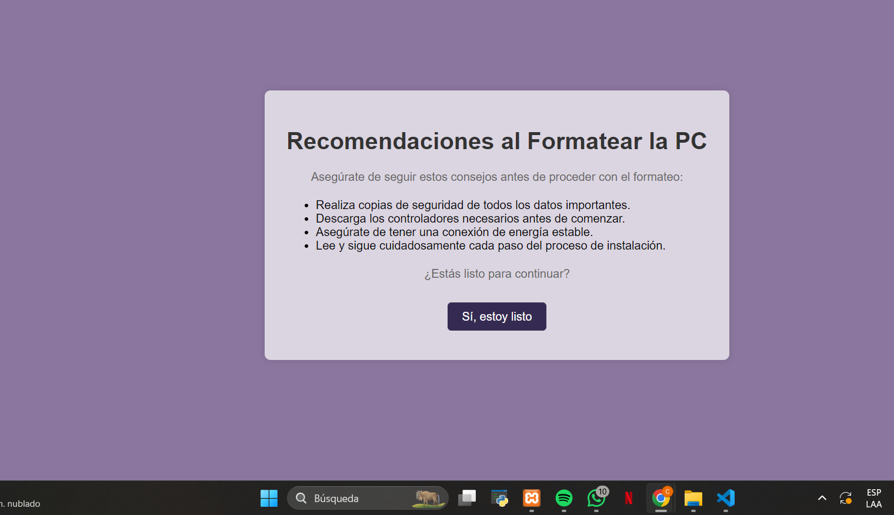
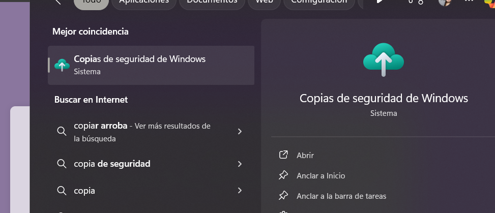
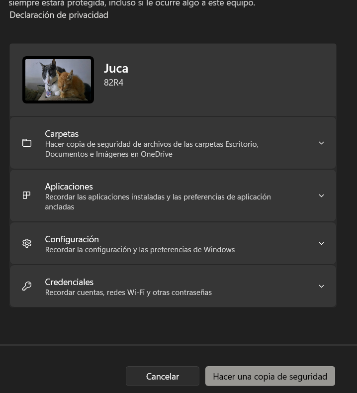

Para realizar una copia de seguridad, Haz clic en la ventana de windows, luego escribe copias de seguridad y por ultimo haz clic en hacer copia de seguridad
  1. Crear en el escritorio una carpeta nueva y le ponemos de nombre “driver”.
2. Copiar el archivo descargado (el controlador) en esa carpeta.
3. Ejecutar el archivo si es EXE o descomprimirlo si es un ZIP o un RAR (ubicándolo en la misma carpeta). Podemos descomprimirlo de dos modos: ejecutando el programa compresor o bien pulsando el botón derecho del ratón sobre el icono del controlador descargado y seleccionando la opción "extraer todo". Recuerde de colocar una marca en el campo "Mostrar los archivos extraidos al completar" luego de la extraccion.
4. Para ver las extensiones de los archivos debemos ir a Organizar > Opciones de carpeta y de búsqueda > Ver y desmarcar la opción ocultar extensiones de archivo.
5. Ir a Inicio > Panel de Control.
6. Seleccionar el icono Sistema y seguridad > Administrador de dispositivos.
7. Una vez en Administrador de Dispositivos vamos a seleccionar el dispositivo que queremos instalar (en nuestro caso instalaremos el adaptador de pantalla). Vamos a pulsar sobre la flecha y luego doble click sobre la línea que aparece bajo adaptadores de pantalla.
8. Nos aparecen las propiedades del adaptador de pantalla, vamos a seleccionar la pestaña Controlador > y el botón Actualizar Controlador.
9. En el siguiente cuadro de diálogo, seleccionamos que lo busque en el equipo y pulsamos "Siguiente".
10. Nos aparece un segundo cuadro de diálogo y seleccionamos la opción Examinar para indicar la carpeta driver donde hemos descomprimido el archivo. Luego click en Siguiente.
11. Ahora debemos escoger el modelo deseado en la lista que saldrá posteriormente.
12. Seguir las instrucciones.